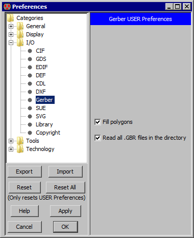

|
Gerber options are controlled with the Gerber Preferences
(in menu File / Preferences..., "I/O" section, "Gerber" tab).
This dialog has two controls:
- "Fill polygons" requests that polygons be filled-in instead of outlined.
- "Read all .GBR files in the directory" requests that the import function scan for
other files ending in ".GBR" and read all of them.
|  |